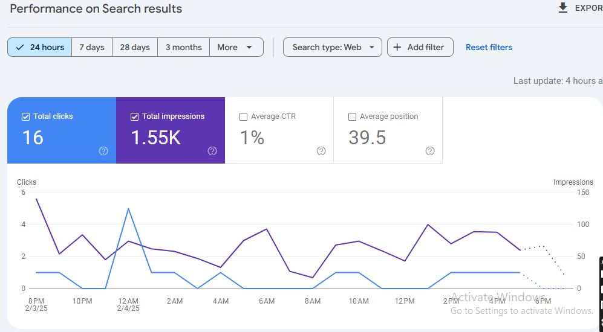

E-commerce Website Optimization
UK-Based Online Store SEO Case Study



Project Overview
A UK-based e-commerce store needed to improve their online visibility and increase sales in a highly competitive market. The main challenge was optimizing thousands of product pages while maintaining site performance and user experience.
200%
Increase in Organic Sales
165%
More Organic Traffic
45%
Higher Conversion Rate
SEO Strategy & Implementation
- Implemented automated product schema markup for enhanced SERP visibility
- Created optimized category and collection pages based on user search patterns
- Developed a content strategy focusing on commercial and informational intent
- Implemented faceted navigation with SEO-friendly URL structure
- Created a blog focusing on product-related keywords and buying guides
Technical Improvements
- Optimized site architecture for efficient crawling of product pages
- Implemented dynamic rendering for JavaScript-heavy pages
- Enhanced site speed through image optimization and lazy loading
- Created XML sitemaps with intelligent prioritization
- Implemented advanced e-commerce tracking and analytics
E-commerce Specific Optimizations
- Optimized product titles and descriptions for search intent
- Implemented review schema markup for better CTR
- Created unique meta descriptions for category pages
- Optimized internal linking between related products
- Implemented breadcrumb navigation with schema markup
Results
After 12 months of implementing our e-commerce SEO strategy:
- 200% increase in sales from organic search traffic
- 165% increase in organic search visibility
- 45% improvement in conversion rate
- Achieved featured snippets for key product categories
- Reduced bounce rate by 35%
- Improved average order value by 25%